从2010年参加工作，到2023年眨眼14个年头了。23年中遇到难得的机会，可以不再为工作所累。接连考完PMP和ACP后，时间来到了8月。该做些什么，才能不辜负这难得的gap时光呢？我时常思考这个问题。要不出去看看吧，等结了婚有了娃，很难有这么长的时间了。从思考到决定，用了1个小时不到的时间。
去哪儿？怎么去？和谁？时间足够的话，要不去远一点，就西藏吧。虽然有油车也有纯电，但Model Y空间很大，而且油价也不低，要不挑战一下开纯电去吧。前两个问题从出现到决定花了不到10分钟，最后一个问题，问了10个朋友，9个要还房贷，还有1个老婆不给钱。以前婚姻叫围城，现在似乎背着房贷也叫围城。摇不到人，我就自己去。
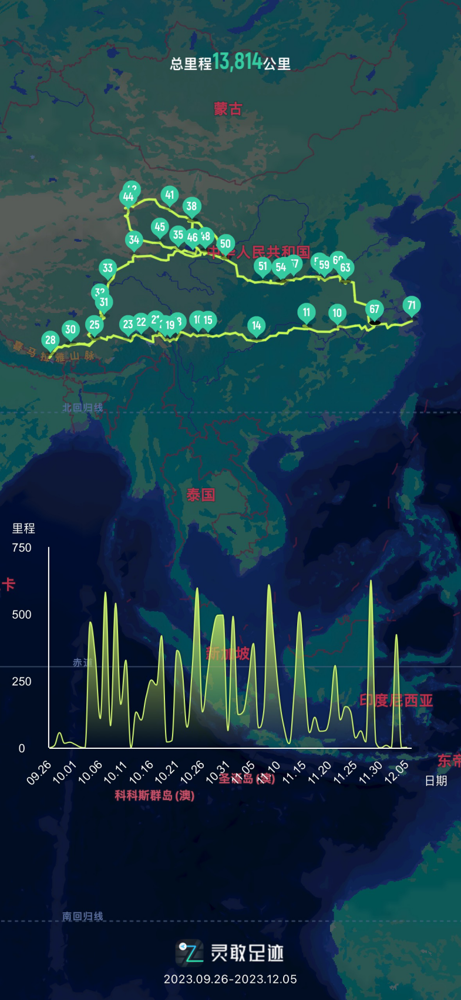
写在最前面的攻略


我的行程
318国道：
- 上海->铜陵->武汉->宜昌->重庆->天全服务区(雅安市天全县)->康定
- 康定->雅江->巴塘->如美(芒康)->左贡->巴宿->波密->林芝->拉萨
- 拉萨->日喀则->珠峰大本营(定日县巴松村)
109国道：
- 拉萨->那曲->安多
- 沱沱河(唐古拉山镇)->格尔木
城市道路没有什么好说的，后勤配套齐全，唯一要说的就是天全服务区。这个服务区是318平原路段最后一个大型补给型服务区，户外装备、医疗装备、车辆装备一应俱全。建议每一个自驾的人都在这里休整，按照自己的需求补给。
高原反应
康定海拔2000米+，建议适当的跑跳，轻微运动，检测自己是否有高原反应，以及休整适应。如果在这里轻微运动就高反了，第一个建议是终止行程。第二个建议是在康定买上高压氧气瓶，或者氧气袋。高压氧气瓶318国道能充的地方不多，提前做好规划。氧气袋可以在医院、药店充，便宜，氧气质量还高。强烈不建议购买罐装氧气瓶。康定西出第一座山是折多山，海拔4200米。如果仍然有高原反应，强烈建议终止行程。每个人身体素质不一样，不要硬撑。高原地区的120急救不堵车还好，堵车的话一两个小时到也是正常的。 说到高反，我就准备了三样东西：红牛、可乐，布洛芬。
如果到这里都没有发生高反，那可以继续行程了，下一个容易高反的是丁真故乡，世界高城理塘(海拔4000米)，在雅江->巴塘行程中间。相比较垭口那一点时间，很多人会在理塘吃午饭，打卡拍照留念，理塘还有毛娅大草原、长青春科尔寺等景点，停留时间比较长，极易发生高反。高反的发生都是滞后的，我是中午路过理塘玩耍的，开了六个小时车快到巴塘发生的高反，头疼、犯困。布洛芬、红牛、可乐三管齐下，最后在金沙江边上的一家温泉酒店住宿的。泡泡温泉，休整一天后高反症状消失。
109国道平均海拔4500米，318还能看到树木、绿叶，109国道因为缺少这些，氧气含量极低，所以上海-拉萨的列车到了格尔木要换供氧车厢，身体素质不好的，不建议自驾。
路况
318国道四川境内基本都是铺装路面，非常好开。跨过金沙江，就是西藏了。西藏境内的路况，就不太一样了，路况急转直下，会有石头+泥土的烂路。再加上常年修路，会遇到道路管制，提前和交警沟通好，做好规划。西藏的交警态度非常好，感觉是交警届的天花板了。唯一感觉危险的路段，就是过了怒江大桥之后的怒江峡谷30多公里，重点是老虎嘴路段。车开下去的话，第二天可以云南旅游了。
109国道拉萨至安多是京藏高速的一部分，属于一级公路，非常好走。过了安多，呵呵，我反正不想开第二次。
青甘大环线没有什么好讲的，都非常成熟了。唯一要说的，就是青海境内的高速和内地的不一样，有平交路口。内地的高速是全封闭全立交的。过平交路口的时候，千万记得减速。
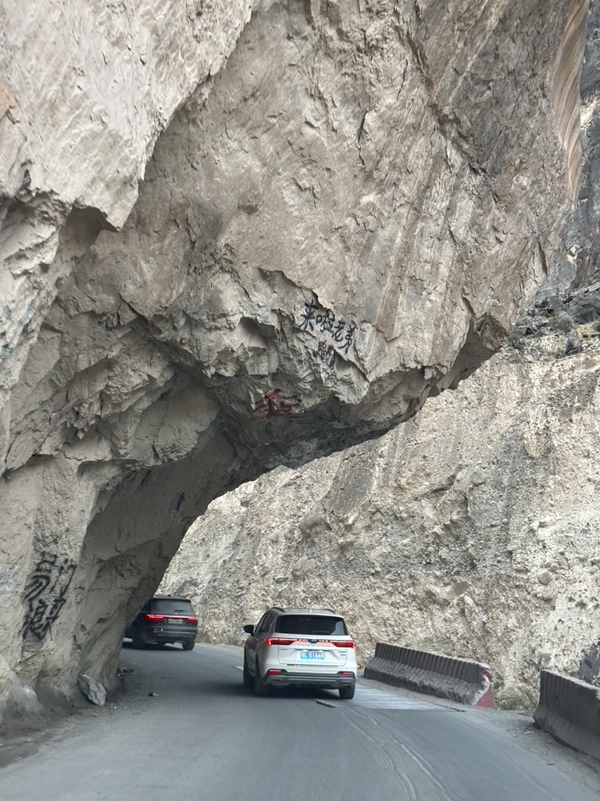
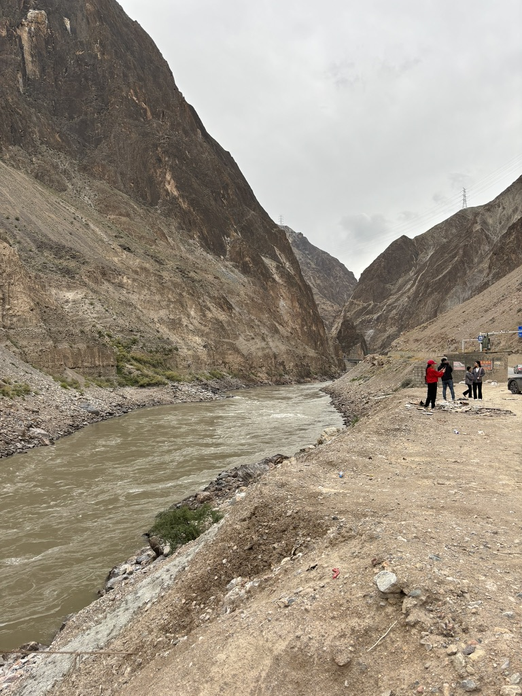
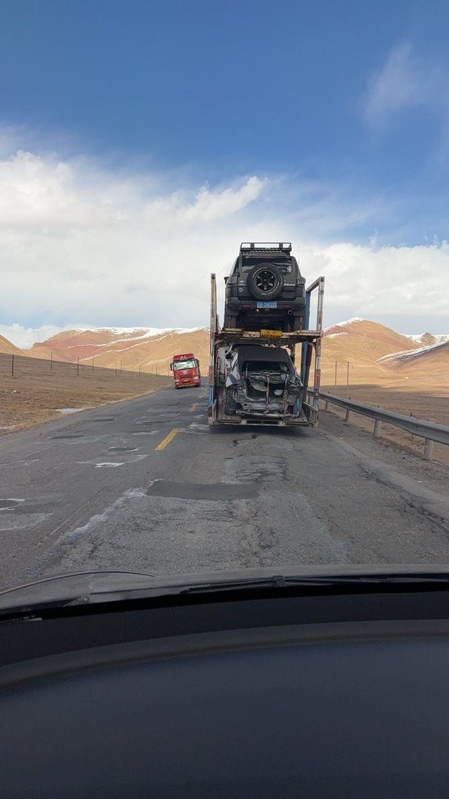
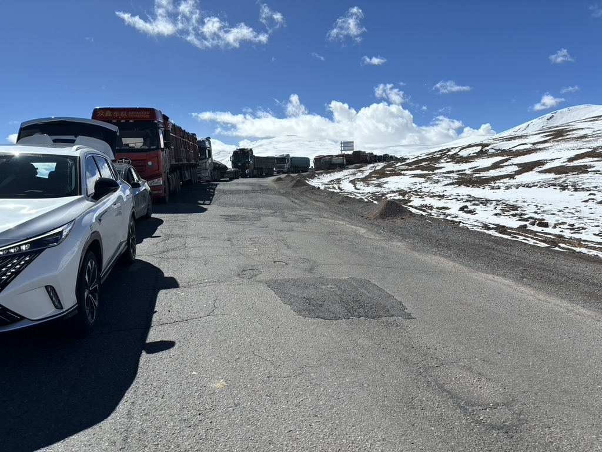
充电
318国道
西藏之前随便充。特来电、小鹏、蔚来、特斯拉和国家电网均有布局。318进西藏之后，国家电网几乎看不到，其他几家的桩沿途均有。拉萨往西，还有较少的特斯拉、蔚来。这里重点说一下九州可往小程序。这个在318国道日喀则市以西，深入到219国道阿里地区，是最常用的充电桩。每一个县城都有桩。另外，带上3.5Kw随车充，没准遇到特殊情况桩不能用，要到藏民家里充电。藏民非常淳朴，必要的礼节做到位，藏民们是非常友好的。
109国道
加电APP必装，特斯拉在这条线上已经看不到了，几乎只有蔚来，这里要强烈表扬蔚来！那曲、安多县城有较多的桩，其他地方桩非常少，旅游旺季不建议开电车自驾。当然这条路上也没什么自驾的人，全是百吨王。
青甘大环线
没什么特别要说的。就一点，走柳格高速，阿克塞哈萨克族自治县翻越阿尔金山进青海的时候，有一段连续的上坡，大约100km。电车要注意，别开巡航，车速80km/h左右，这样刚好能到大柴旦。这段属于无人区，连个鸟都看不到，要是跑没电了，有苦头吃了。
一些纯实用干货
- 弯道不超车、不停车。
- 天黑不行车，下雪不行车。百吨王司机传授给我的经验。
- 带上防滑链，下雪了用得上。防滑链装驱动轮上，一定要自己先装一遍。
- 318国道上的景点，带栏杆的停车场，大部分都是私人的，只要进去，就收费，没有免费停车时间。
- 不要随意下铺装路面，运气好车和人都能回来，运气差点人能回来车回不来，运气再差点人车都回不来。
- 买好意外险，最好留下遗嘱。318国道塌方和落石路段还是有的，明天的太阳能不能看到谁也说不清楚，全看命。
- 不要随意开车门，尤其是日喀则地区。单人、纯女生，更要注意人身安全。停车的时候碰到有人围着你车转，多留神。
- 遇到牦牛、羊群挡路别按喇叭，远远的停车。一头牦牛三四万人民币，撞到一头可以原路返回了。
- 进高原后，气压变低，胎压也会降低，及时补充胎压。别问我怎么知道的，我换了四条轮胎。
- 别逞强，别脱衣服拍好看的照片，尤其是在109国道上。纳赤台得病，五道梁送命的事情，每年都有。
- 遇到轮胎附近冒蒸汽的重卡，离远点。这是淋水器在工作，给刹车降温的。刹车过热后，制动距离会变长，所以要淋水降温。
- 315国道有很多U型路段，短视频平台经常推坐在路中间打卡拍照的视频，这是送命的行为。重卡在这种路段需要冲坡，不然会上不去，所以下坡会踩油门。碰到人品好的司机，拉一把方向冲到路边撞车，运气不好碰到刹车热衰减的重卡，容易g。
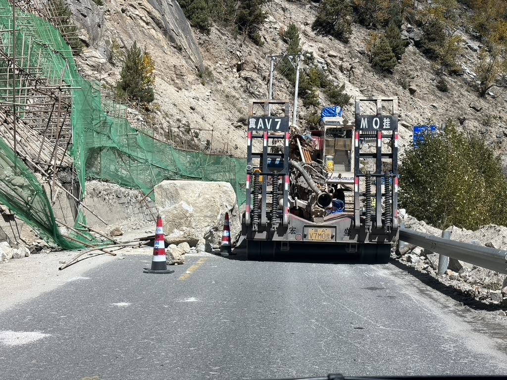
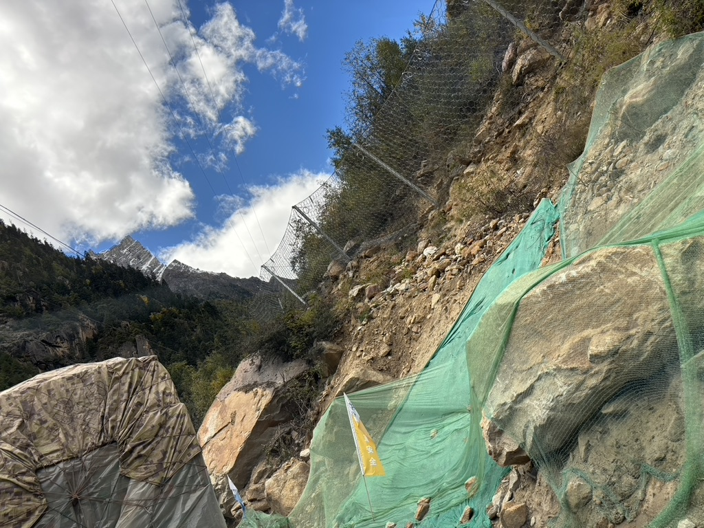
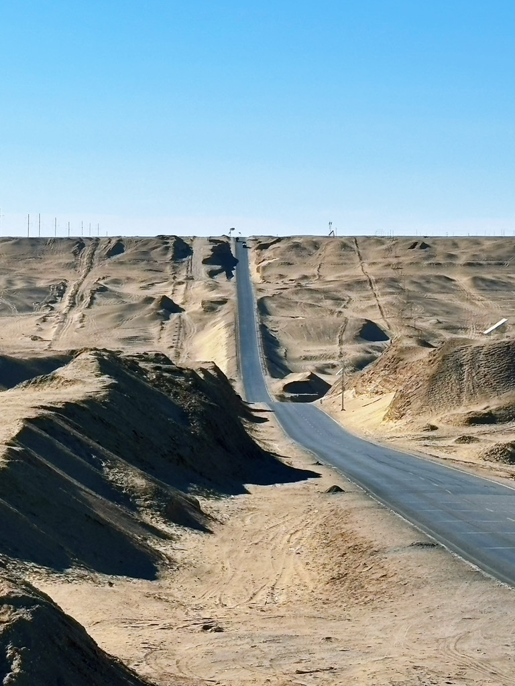
一些风景照
西部虽然自然环境恶劣，条件艰苦，但风景还是很美的。
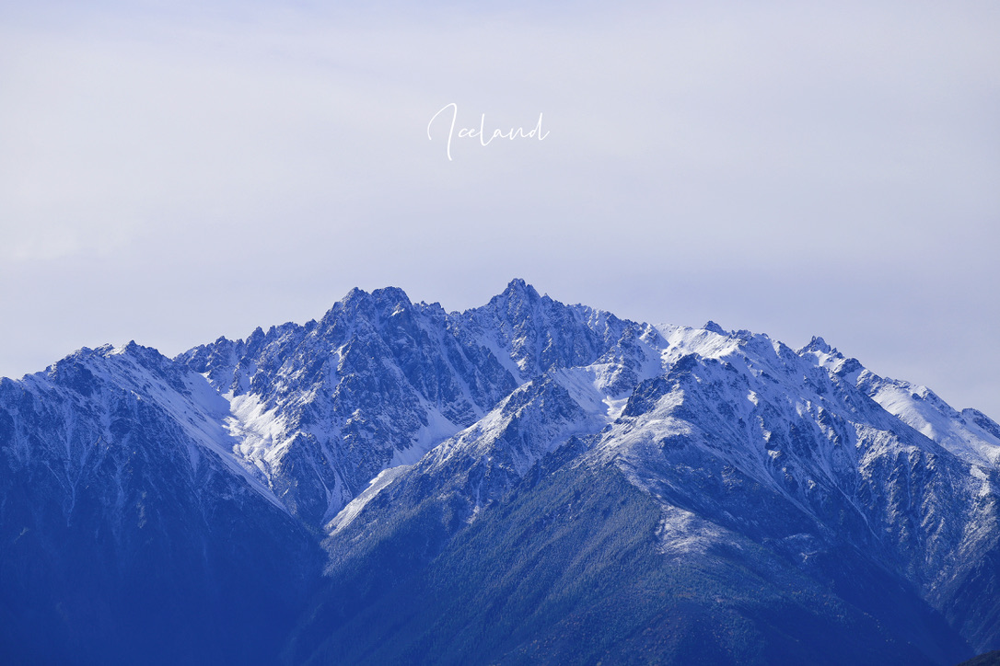
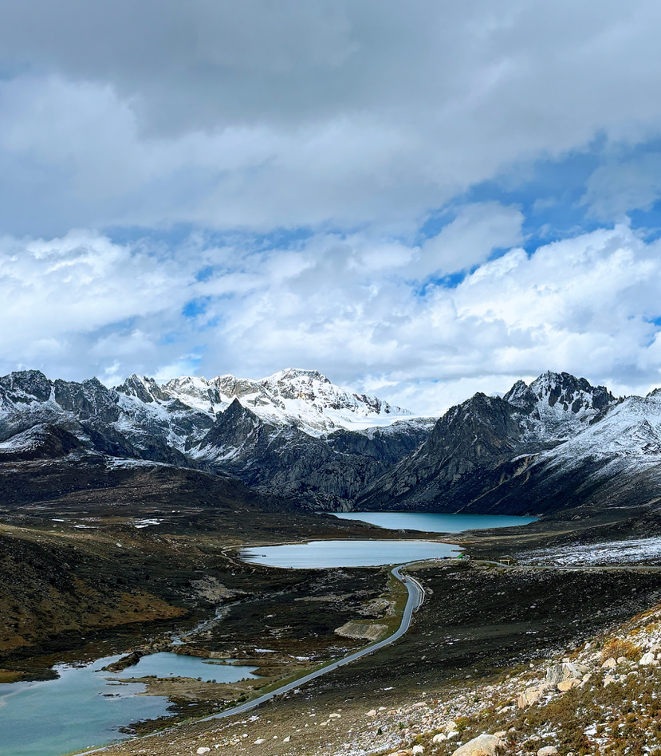
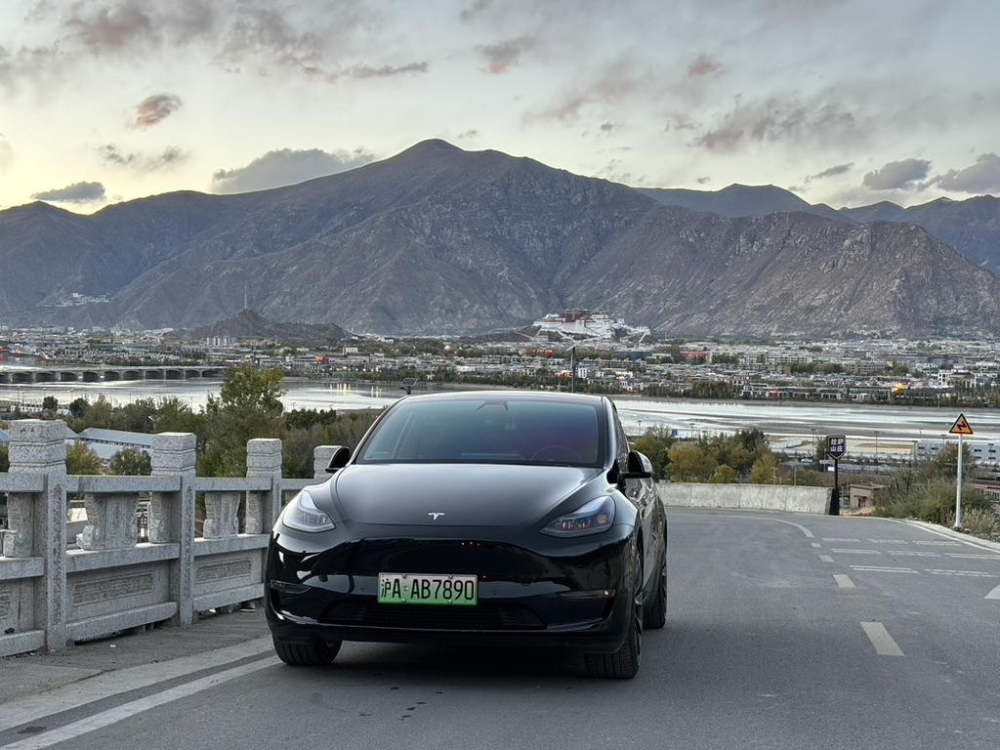

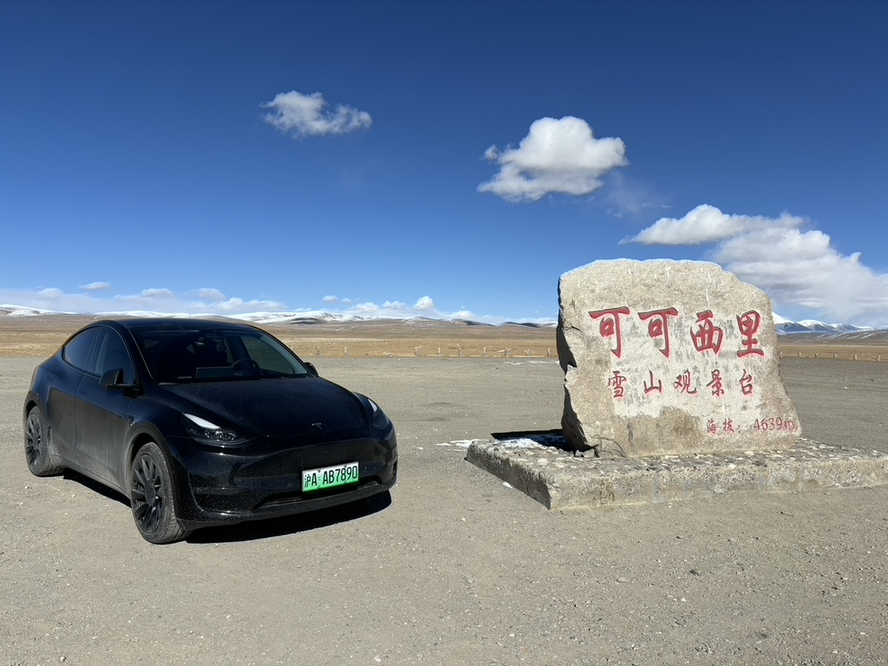
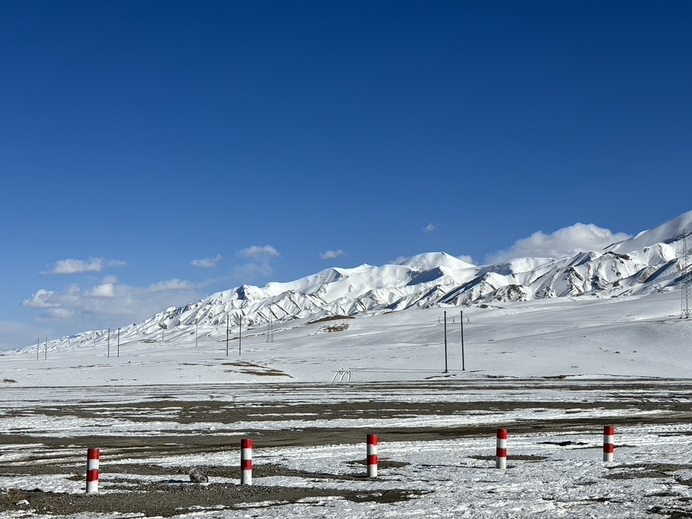
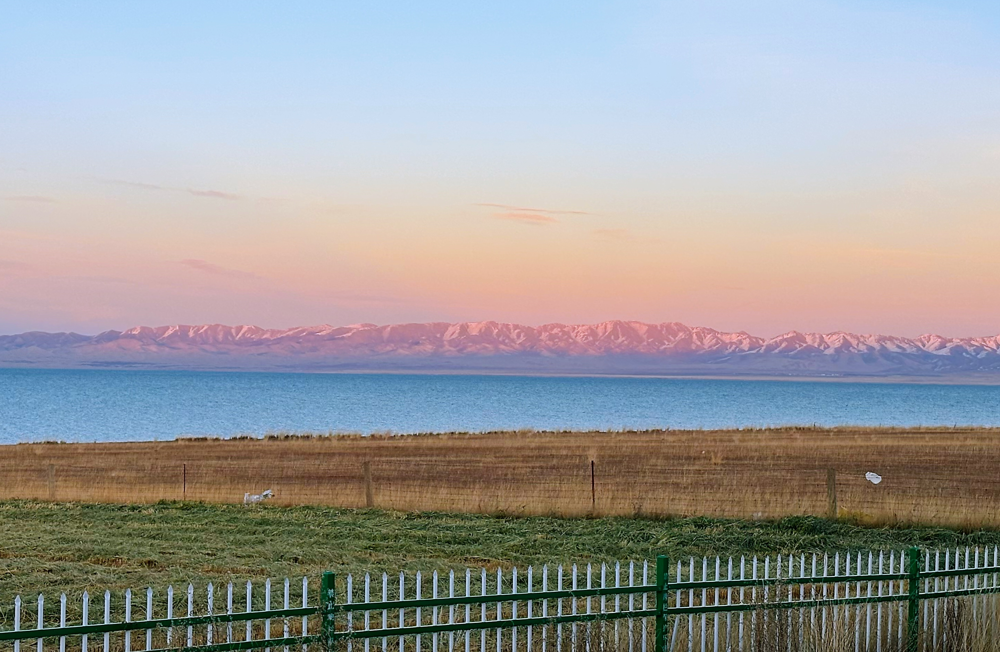
天地、众生和自己，先见哪一个？
一个偶然的机会，去听了复旦大学王德峰讲《金刚经》。“三句义”虽然听得懂，但从来没切身感受过。再加上个体经历的迥然不同，有的人一生只见自己，有的人先见众生后见天地，所以很难对这三件事物有先后的排名。若以佛家的视角来看，见自己要远比见天地、见众生更难。事实上，正因为见天地、见众生，才得以见自己。我的人生脚本给的次序是：天地、众生、自己。现在来看，这样的次序，是有哲学上的深度的。禅宗里追根究底，不过求一个自家本来面目。天地、众生无非是外在的形象，外在形象为心所变。所有皆是眼上所见、心中所想。人生在不同的阶段，也会有不同的信仰。
中国到底是什么样子的？
《乡土中国》这本书是费孝通先生写于20世纪40年代。虽然中国的城镇化率已经接近70%，但书中很多对中国基层社会的描述放在当下也是非常合适的。本书虽然讲的是乡土社会，但深层理解，却是讲了很多我们礼俗习惯背后的原因。我在自驾之前就读过这本书，自驾回来对这本书中的观点感触颇深。费老从各个方面抽象的阐述了中国社会基层的样貌，我觉得对大家了解中国很有帮助。
乡土本色
这个“土”字，代表着土地、土气。每一片土地上生活的人们，都有着当地的土性。当我明白了这个“土”字的含义后惊奇的发现，我们的思想、理念、行为、习惯均来自土的特性。城市里生活的人们，朝九晚六，背负房贷，是每一片工业化、经济化的土地性质所决定的。西部山区里生活的少数民族，天黑就载歌载舞，天亮就放马、牧羊，是农业化的土地性质决定的。知识分子的小孩识字多，乡下的孩子认识五谷杂粮，还会捉蚱蜢。土地性质的不同，导致人们所持有能力的不同，而不是智力问题。原有的土地容纳的人数饱和后，过剩的人不得不向外迁徙。工业化的一个次要目的，就是解决农村过剩的人口。
文字
为什么上一代，上两代农村文盲多？以前我把原因归结于经济落后，教师资源短缺，却想不到农业人口本来就不需要学那么多文字。文字的本质是为了记录和传递信息，基层社会都是直接社交，并不需要文字。少数民族的牧民，一吹口哨，就表示牲畜要收栏回笼了。**群体越大，共同经验越有限，语言也简单。少数人之间，因为交往需要会形成特殊语言（行话）。**书中这个观点我体会颇深。城里人打招呼，用的是你好。河南农村里，民以食为天。“吃了吗？”就是你好的意思。我在109国道上和很多重卡司机聊过天，“飞车”：指柴油发动机转速失去控制，大大超过额定转速，排气管冒出大量黑烟或者蓝烟的故障。“开锅”：并不是水烧开了，而是爬坡时间太长，导致发动机冷却液被烧开了。“对齐、抓手、赋能、闭环……”，互联行业的特殊语言。
男女有别
乡土社会所求的是稳定。男女间的关系必须有一种安排，使他们之间不发生激动性的感情。稳定关系的力量，不是感情，而是了解。依现代文化来看，男女间感情激动的发达已使生育的事业摇摇欲坠。《乡土中国》p66、p69。
这段异性之间关系的阐述，放在现代也不过时。土地性质决定人群所持有的能力，开放程度越高的城市，人群采用浮士德式的两性恋爱方式也越多，感情的激动程度也远高于西部农牧地区。因而导致离婚率升高、生育率下跌。
写在最后
写到这里了，已经很多文字了。最后让我想到的一句话：“读万卷书，行万里路”。行万里路，不仅仅是看风景，尝美食。更深层的含义是带着理论去实践。你们觉得呢？